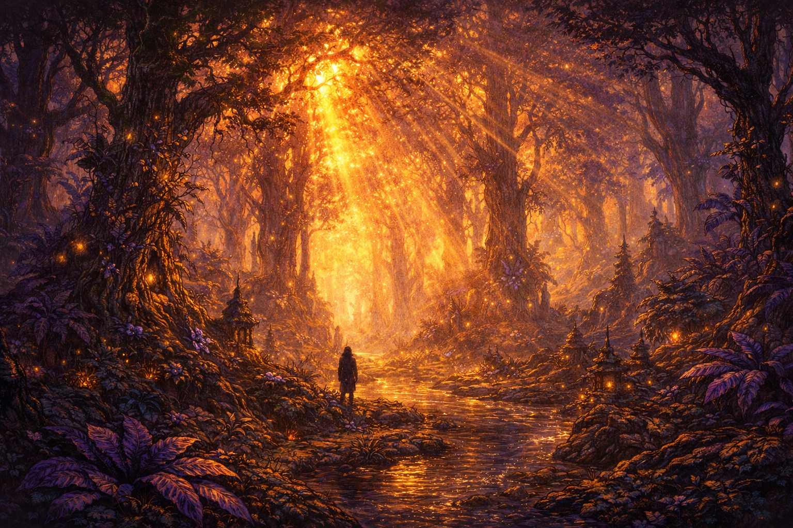
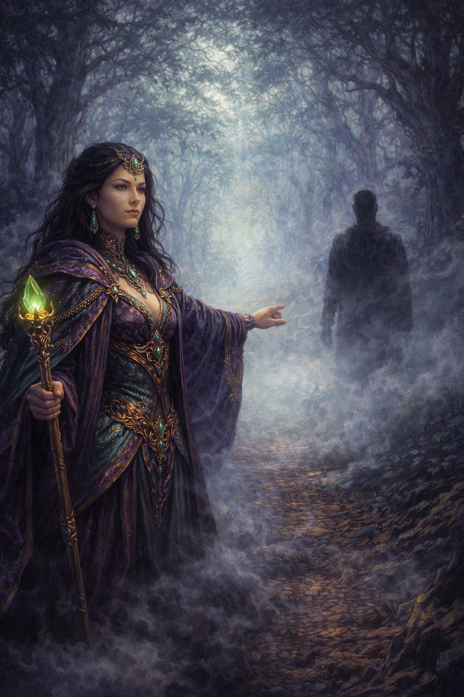
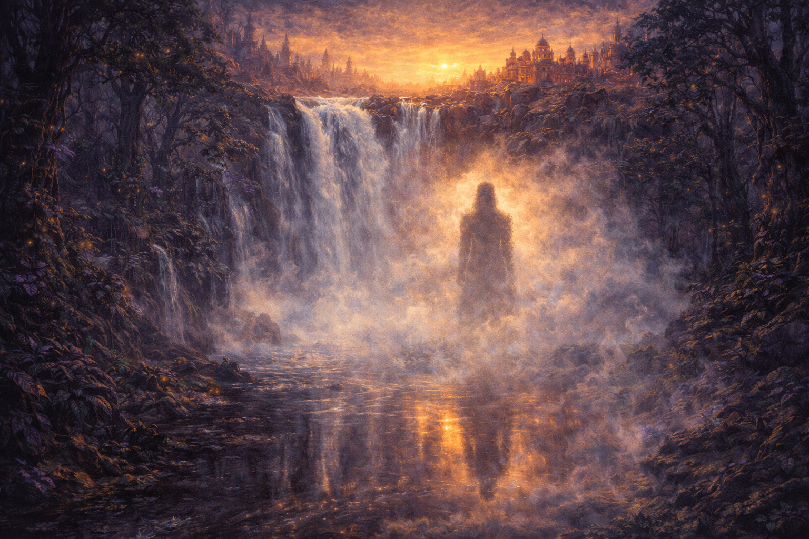
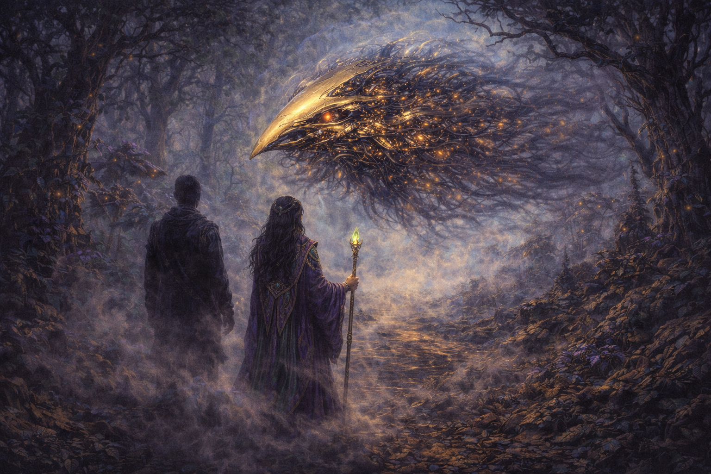
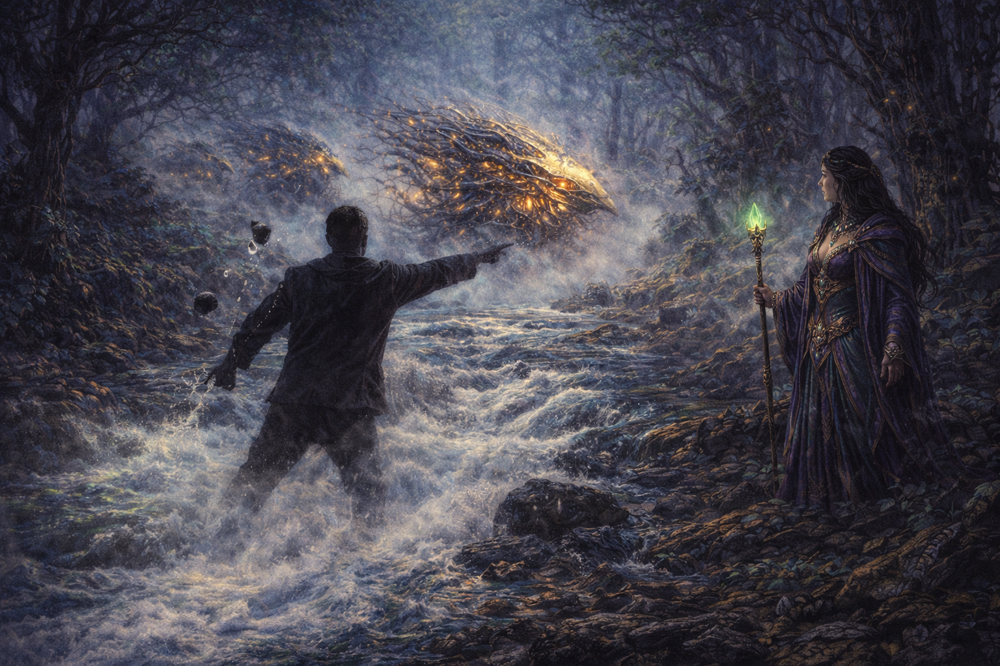
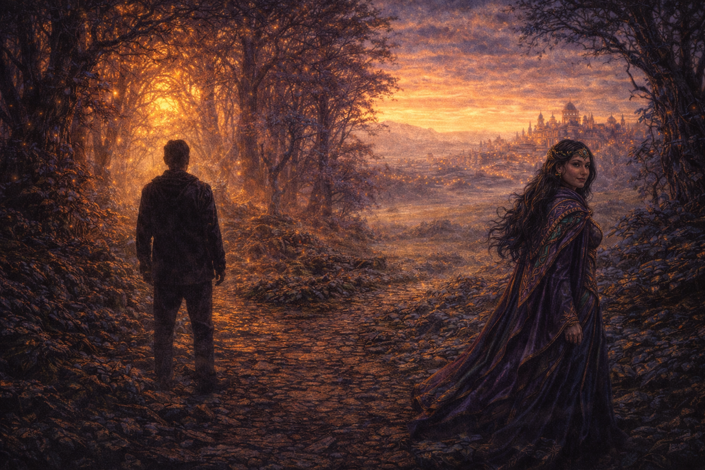
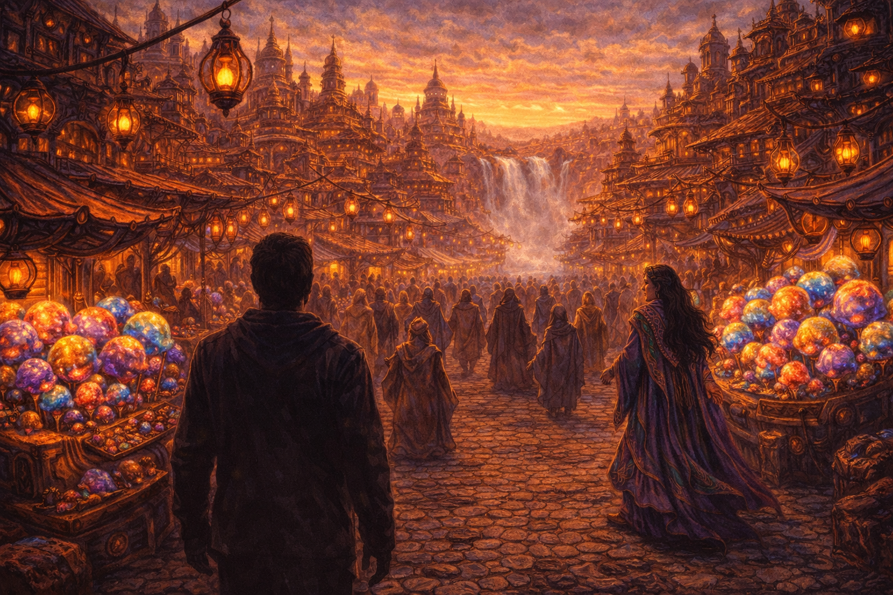

The Galderian 51 Archive
Department of Ashashuaian Studies
Transmission Report — Corrath Perimeter & Forest District
Filed by: A Researcher (Creampop-less)
Transmission method: Classified. Earth-based. Probably fine.
Classification: Ambiguous — filed under Vision, Dream, and Academic Study pending further reviewThe following is a direct rendering of the transmission as received by the Archive. The experiential quality of the feed is acknowledged. The Archive has made no editorial adjustments to the second-person rendering. The Archive is not entirely sure it could have, even if it tried. Whether what follows is a vision, a dream, a remote observation, or something else entirely is left to the discretion of the reader. The Archive takes no position on this. The Archive takes no position on most things. It is, after all, an archive.
Press play. The transmission begins.
I. The Forest Awakening

This depiction was approximated using primitive Earth-based imaging technology
You don't remember arriving.
This is not unusual for portal transit, or so the scholars say. What you know is that you are standing in a forest that is not any forest you have seen before, and the light is coming through the canopy in long golden shafts that feel less like light and more like direction. The trees are ancient and strange. The foliage is a shade of green that your eyes accept without fully processing. Somewhere nearby, water is moving.
You stand very still and let the place arrive around you.
The birds are everywhere and nowhere — present in the air around you like a surround of living sound, close enough to feel but not close enough to see. A low resonant hum moves beneath everything, the kind of sound that makes it unclear whether you are awake. The water clarifies this slightly. Water is good for that.
You are looking for something. You know this the way you know things in dreams — not as a conclusion you have reached, but as a fact that has always been true and is only now becoming relevant. The forest does not tell you what it is. It doesn't need to. The light through the canopy falls where it falls. The birds hold their position in the air around you. The river waits.
You begin to walk.
II. Meeting Velshara

This depiction was approximated using primitive Earth-based imaging technology
The smog finds you before she does.
It drifts in from the direction of the city — thin, pale, not quite fog, carrying with it the distant suggestion of noise and commerce and approximately ten thousand Creampop transactions occurring simultaneously somewhere beyond the treeline. It softens the forest road ahead of you without quite obscuring it. You keep walking.
She steps out of it like she was already there and the smog simply caught up.
You stop. She stops. The forest road holds you both in the kind of silence that has weight to it — not hostile, not comfortable, just present. You have approximately one hundred and twenty seconds in which you consider several possible responses to this situation, including fleeing, which you reject, and explaining yourself, which would take considerably longer than you have.
You look at her. She has already looked at you and finished.
She is composed in a way that suggests composure is not something she has to work at. Her robes are deep purple and teal, layered and ornamented with gold that catches the filtered light. She carries a scepter with a green gemstone that glows faintly, held loosely, present but not threatened. Her expression is still. Behind her eyes there is a private thought that she has no immediate plans to share.
The smog drifts between you. The cool earth nestles between your toes. Somewhere above the canopy, a bird calls.
She extends her hand. It is not a dramatic gesture. Her hand remains limp — this is not a surrender, and it is not a challenge. It is a mirrored proposition. An acknowledgment that you are both here, in this forest, in this smog, with no obvious explanation for either of you, and that this is perhaps more interesting than it is threatening.
You reach out and meet her halfway.
No Creampop is exchanged. Under Corrath customs this is considered quite rude. Under the circumstances, no one says anything about it.
III. The Merger Moment

This depiction was approximated using primitive Earth-based imaging technology
You walk together without discussing where you are going. This is fine. You are both going to Corrath. You know this the way you know the other thing — not as a conclusion, just as a fact that has arranged itself quietly in the background while you were paying attention to everything else.
The waterfall announces itself before you see it — a change in the air, a coolness, the sound of the river discovering that it has run out of ground. Then the trees open and there it is: white water falling through the cliff face at the eastern edge of the city, the rooftops of Corrath's tiered architecture visible above, the amber lantern glow already warming the sky beyond.
You stop at the bank and look at the mist rising from the base of the falls.
Your reflection looks back at you. This is expected. What is less expected is that it does not look quite like you. It looks like you and something else, combined — not merged in any way you can point to, but resolved, the way a question looks different once you know the answer even if nothing about the words has changed. The mist shifts. The reflection holds.
Beside you, Velshara glances at the water. Her expression does something small and private that you are not quite fast enough to catch. She looks away first.
The birds are very loud here. The water does what water does. You stand at the base of the falls for a moment longer than is strictly necessary, and then you follow her toward the city.
IV. The Bydo-X Encounter

This depiction was approximated using primitive Earth-based imaging technology
It finds you half a mile from Corrath's outer market district, where the old trees grow closest together and the light has been behaving strangely for the last several minutes without either of you remarking on it.
You notice the transmission quality change before you see it. This is the wrong way to describe it, but it is the most accurate. The air develops a quality of interference — not quite visual, not quite auditory, somewhere in between, like a signal losing its footing.
Then it emerges from the treeline.
Pale gold at its leading edge, sleek and projectile-shaped, the only coherent part of it. Behind that coherence: an unraveling mass of dark mechanical tendrils with amber light burning deep within, pulsing in rhythms that don't quite repeat. Its edges blur and transform continuously, as if whatever it is hasn't finished deciding. The cool blue light of its atmospheric distortion makes the surrounding forest look wrong in a way you feel before you can name it.
It is watching you. It has no visible eyes. It is watching you anyway.
More of them hold back in the trees — less defined, less present, edges dissolving into the shadows between the old trunks. Waiting to see what this one does. The Bydo-X drifts closer with the casual menace of something that has not yet determined whether you are a threat or an inconvenience.
Velshara becomes very still beside you.
You become something else. The serenity of the past hour has not left you — the forest, the birds, the waterfall, the outstretched hand in the smog. None of it has left you. If anything it has concentrated, the way light concentrates when you focus it. You are standing in the cool earth of the alien forest with amber nodes pulsing in the dark mechanical mass before you, and you are not afraid. You are paying attention.
This, it turns out, is enough to begin with.
V. The Bydo-X Routed

This depiction was approximated using primitive Earth-based imaging technology
The river is right there.
You don't plan it. You simply notice it — the rushing water, the smooth flat stones lining the bed, the way they fit in a palm with a precision that feels almost considerate. You are moving before you have finished the thought, dropping to the bank, plunging your hands into the cold current and coming up with both fists full of smooth river rock.
The Bydo-X recalibrates. It is faster than you expected. You are faster than you expected.
What follows is brief and decisive and not particularly elegant, which seems appropriate. The stones leave your hands in sequence. Not all of them connect. Enough of them do. The sound of smooth rock meeting mechanical lattice is deeply unsatisfying to hear and, it becomes quickly apparent, considerably more unsatisfying to receive. The Bydo-X emits something short and deep — a sound the Archive's audio division recommends you not think about too carefully — and its pale gold core loses coherence. Its trailing tendrils flicker. The amber nodes go irregular.
Its companions at the treeline, who have maintained their patient observation throughout, begin moving in the direction of away. The damaged form follows, flickering and recalibrating, its atmospheric distortion dissipating as it retreats into the old trees.
You stand at the river's edge, breathing hard, both hands empty.
Velshara looks at you with an expression that has revised itself upward. She does not say anything complimentary. The forest, as if none of this happened, returns immediately to itself. The birds resume. The light falls where it always falls. The river continues without comment.
VI. The Message

This depiction was approximated using primitive Earth-based imaging technology
You stand at the forest edge and don't move immediately.
Corrath glows on the horizon — the amber lanterns, the tiered rooftops, the warm impossible noise of a city that has been loudly and chaotically itself for longer than anyone has measured. Velshara is a few steps ahead, already oriented, already thinking about whatever comes next. She does not rush you.
The forest is behind you. The birds are still present in the canopy. The river is somewhere to your left, continuing its indifferent progress toward the city's waterfall. The cool earth is under your feet. All of it is still here.
And here, at the edge of it, standing between the forest and the city with river water still cold on your hands, you understand what the message was.
It was never for Ashashua. It was never something you needed to deliver to anyone. It didn't require a portal, or a forest, or a mechanical threat with no fixed shape, or a stranger extending a limp hand in the smog, or a waterfall that shows you something in its mist that you weren't quite ready to see until you saw it. It required all of those things, yes. But not to deliver a message outward.
To receive one.
You must keep going.
Not forward necessarily. Toward the unknown. Toward the unresolved. Toward whatever is on the other side of the smog that you cannot name until you are already through it. The fear of the dark, the fear of change, the fear of what you cannot control — these are not obstacles. They are the terrain. You can only choose the direction you travel. What lies beyond is not yours to determine in advance. This is not a flaw in the situation. This is the situation.
The forest gave you this. The birds confirmed it. The Bydo-X, in its deeply unhelpful way, demonstrated it. Velshara, who has known this whole time, does not gloat.
She turns and looks back at you from a few steps ahead. Her expression contains the very faintest elongation of a grin — private, small, there and then not there. She turns back toward Corrath.
You follow.
VII. Arrival at Corrath

This depiction was approximated using primitive Earth-based imaging technology
Corrath does not ease you in.
The outer market district arrives all at once — the noise, the amber lantern glow, the press of robed figures moving between stalls piled with goods that smell extraordinary and look alarming. The tiered bronze and gold architecture rises in every direction without apparent plan or apology. The waterfall from the forest runs right through the heart of the city as though the city simply built itself around it and never thought to mention it, which is exactly what happened.
The Creampops are everywhere. Stacked on stalls, traded across counters, argued over with an intensity that suggests the stakes are considerably higher than they appear. You receive several looks that register the absence of a Creampop in your hands with visible concern. Velshara receives none of these looks. This tells you everything about Velshara.
The cobblestones are warm underfoot. The lanterns swing in no particular wind. The orange sky above the rooftops is doing something beautiful that nobody around you seems to be looking at because they have all seen it before and also there are Creampops to attend to.
You stand in the middle of it and feel, perhaps for the first time since you arrived through the portal with no memory of arriving, that you are somewhere. Not just located. Somewhere. The distinction matters more than you would have expected.
Velshara glances back at you once from several paces ahead, confirms that you are still standing there absorbing it, and continues into the city. You will catch up. She knows this. You know this.
You take one more breath of Corrath air — Creampop, lantern smoke, river mist, and something underneath it all that you cannot identify and probably should not investigate — and you follow her in.
Transmission ends.
The Archive has no further record of the visitor, the message, or what happened next in Corrath. Velshara's whereabouts, as always, are known only to Velshara. The Bydo-X was sighted again three days later, approximately two miles east of the waterfall. It appeared undamaged. It was watching.
This report was filed by a researcher who remains, as of this writing, creampop-less. Progress on this front is pending.
Galderian 51 Archive, Department of Ashashuaian Studies
Date of filing: Unknown. The Archive's calendar system is, at present, a work in progress.